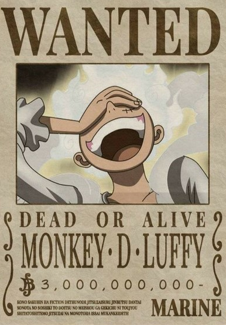

Monkey D. Luffy
Um jovem cujo corpo ganha as propriedades de borracha após ter comido a Gomu-Gomu no Mi, uma das várias frutas amaldiçoadas conhecidas como Akuma no Mi ou Frutas do Diabo. Em busca de seu sonho de ser o Rei dos Piratas, Luffy navega pelo mundo procurando o lendário tesouro One Piece que foi deixado por Gol D. Roger, o antigo Rei dos Piratas. Alegre e aventureiro, Luffy cria seu próprio bando chamado os Piratas do Chapéu de Palha e eles são constantemente antagonizados pela marinha do Governo Mundial. Em batalha, Luffy usa a elasticidade de seu corpo para se esticar e lutar.